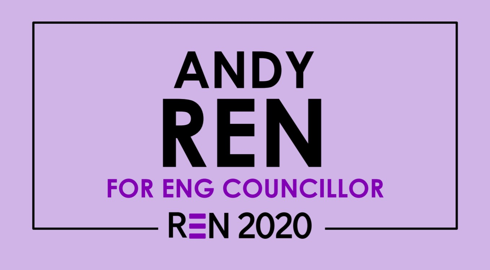

About
"The one unchangeable certainty is that nothing is unchangeable or certain.”
Hey there! I'm Andy, and I'm a 2nd year Computer Engineering Student at the University of
Waterloo.
When I have free time, I enjoy reading non-fiction (healthcare, history, politics, you name it!),
playing music
, and tinkering on new projects.
I'm a Waterloo Undergraduate Student Association (WUSA) Student Councilor, serving the students
of the Engineering Faculty and defending their interests.
In the future, I hope to be able to develop innovative ideas that can hopefully positively impact
the lives of others.
You can contact me via email or Linkedin.
Ren 2020 - My platform
Introduction - Andy
Hi everyone! Thanks for dropping by :)
I'm a 2A Computer Engineering student, and I'm running to be your next engineering councilor!
Before we move on, here's just a few random facts about me:
- I just finished 1B Computer Engineering this spring term, and I'm interning as a software
developer at VirtaMove in Ottawa
- I play three musical instruments - Piano, Alto Saxophone, and Percussion
- I speak 3 languages fluently (English, Français, and 普通话)
Experience
Throughout high school, I've had the privledge of serving on a number of student advisory committes,
finding ways to
help others in my community.
In my senior year of high school, I served as Student Senator, representing 1200+ students and
parents of my
high school at the school board level. I've personally worked with elected adult trustees on serious
issues concerning students of the day. For example, I was able to provide direct input on
implementing IB at a new high school in the west end of the city, I participated in
consultations on the board operating budget, and I was part of a group that hosted a
student conference on graduate exit outcomes and board policy. My experience encompassed working
with elected
officials and stakeholders and passing legislation has allowed me to gain solid experience in
ensuring that the needs of students are met and that their voices are heard.
Furthermore, I also was a member of my Member of Parliament's youth council. Here, I worked with
other students in my constituency to develop methods for the Federal Government to tackle the opioid
crisis.
And lastly, in first year, I served for two terms as a class representative to First-Year
Engineering, which
coincided with a few major scandals that occurred within my engineering cohort. I made it my
personal goal
during those terms to mitigate miscommunication and rumors being passed around and to ensure that
First-Year's message was being transmitted to the proper channels. Furthermore, I also made sure
that student concerns regarding the many diverse issues (i.e Removing hell week, workload) were
addressed by First-year as well.
Next steps -Standing up for you
I'm running for councilor, because I'm passionate about student advocacy and helping others,
because I want to make sure that we're getting things done, that student
issues are being addressed, and because we need a councilor to help ensure WUSA executive is aware
of the needs
of
engineering students and
can then take proper action.
Some of my fellow candidates have promised specific things, some have even promised memes. However,
in my
experience, this is a position that requires having conversations with students over time and being
serious about standing up for their rights. It is one thing to promise major sweeping changes, but
it
is a completely different beast to implement those promises.
On a side note, I also wanted to mention one thing that really inspired me in first-year, was that I
was able to witness direct results of the
advocacy FEDS/WUSA has done for students. For example, some of the advocacy included
consultation on student fees policy, standing up to the provincial government on OSAP cuts,
investing in legal services, or even switching to 2 ply toilet paper (:^)), these are just a few
things
that were brought up by students, are being implemented or is being actively addressed
for students,
and are the now the models for what we need to continue to fight for.
Thus, as your councilor, I pledge to-
- Be a passionate advocate for all engineering students at the university, provincial, and
federal level, ensuring that no student is left out,
- Make sure that every measure I propose at the council table will be with full
consultation and
in the best interest of all engineering students,
- Push for an organizational framework to tackle recurring issues such as (but not
limited to)
mental health, OSAP, and student fees. The goal is to increase organizational
transparency and student
involvement in
formulating new policy for the years to come.
With my experience advocating for student voice for the past few years, I hope I can earn your vote
as your voice as engineering councilor on October 9th-10th.
